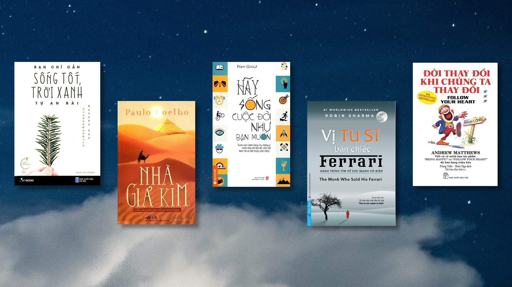
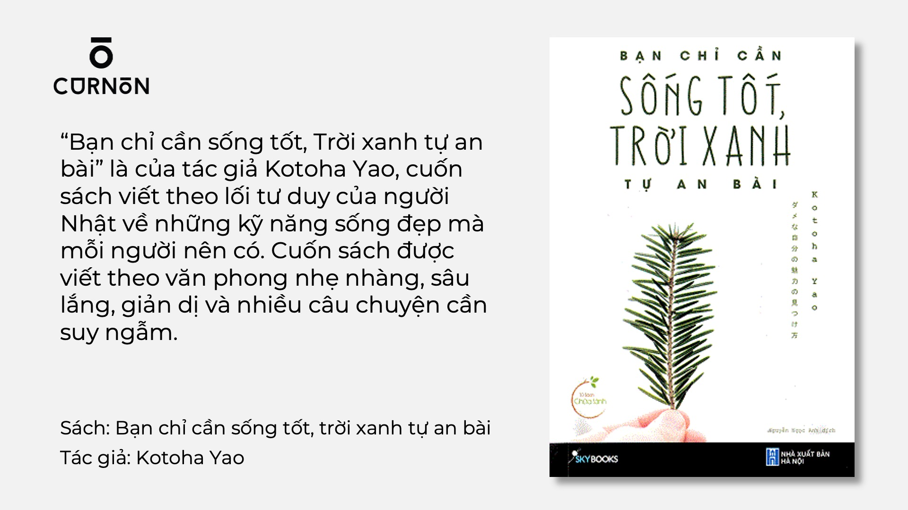

Những cuốn sách bạn nên đọc 1 lần trong đời
Ngày đăng: 15/11/2024
1. Bạn Chỉ Cần Sống Tốt, Trời Xanh Tự An Bài – Kotoha Yao “Bạn chỉ cần sống tốt, Trời xanh tự an bài” là của tác giả Kotoha Yao, cuốn sách viết theo lối tư duy của người Nhật về những kỹ năng sống đẹp mà mỗi người nên có. Cuốn sách được viết
theo văn phong nhẹ nhàng, sâu lắng, giản dị và nhiều câu chuyện cần suy ngẫm. Sách hay về cuộc sống bạn chỉ cần sống tốt, trời xanh tự an bài Sách hay về cuộc sống: Bạn chỉ cần sống tốt, trời xanh tự an bài – Kotoha Yao Tuyệt vời nhất
là khi đọc xong một cuốn sách bạn có thể hấp thụ tất cả năng lượng tích cực mà cuốn sách mang lại. “Chỉ cần bạn sống tốt, trời xanh sẽ an bài” là một cuộc sống thu nhỏ qua từng trang sách giúp bạn sống tích cực hơn mỗi ngày. Khi bạn đang
ở trên đỉnh cao của thành công hoặc thung lũng của sự thất bại, bạn nhận ra rằng mọi việc sẽ không thuận buồm xuôi gió với bất kỳ ai. Cho dù đó là thành công, thất bại, hay thậm chí là trải nghiệm tồi tệ nhất, đó là bài học cuộc sống xứng
đáng để bạn nhận ra giá trị của mình. Bạn có thể mua “Bạn chỉ cần sống tốt, Trời xanh tự an bài” 
2. Đời thay đổi khi chúng ta thay đổi – Andrew Matthews Đúng
như tên gọi, cuốn sách do tác giả Andrew Matthews xuất bản nhằm mục đích đánh thức khả năng tiềm ẩn trong mỗi chúng ta. Trong xã hội ngày càng hiện đại và phát triển cũng khiến con người trở nên nhạy cảm và dễ bị tổn thương hơn, buộc mỗi
chúng ta phải luôn tìm cách thay đổi bản thân, thay đổi cuộc sống, đó cũng là xu hướng của nhiều người hiện nay. Sách hay về cuộc sống đời thay đổi khi chúng ta thay đổi Sách hay về cuộc sống: Đời thay đổi khi chúng ta thay đổi – Andrew
Matthews Thông qua cuốn sách “Đời thay đổi khi chúng ta thay đổi” của tác giả Andrew, ý tưởng cốt lõi của cuốn sách này là mang đến cho người đọc hiểu rõ bản thân hơn, luôn hạnh phúc và vị tha, có cái nhìn tỉnh táo về cuộc sống xung quanh,
để bạn có thể thay đổi bản thân để nhiều hơn. Nào hãy nắm lấy cơ hội để hạnh phúc cho chính mình. Ngoài ra, cuốn sách còn được độc giả đón nhận và ấn tượng bởi những câu danh ngôn và hình ảnh minh họa sinh động, hài hước. Bạn có thể mua
“Đời thay đổi khi chúng ta thay đổi”